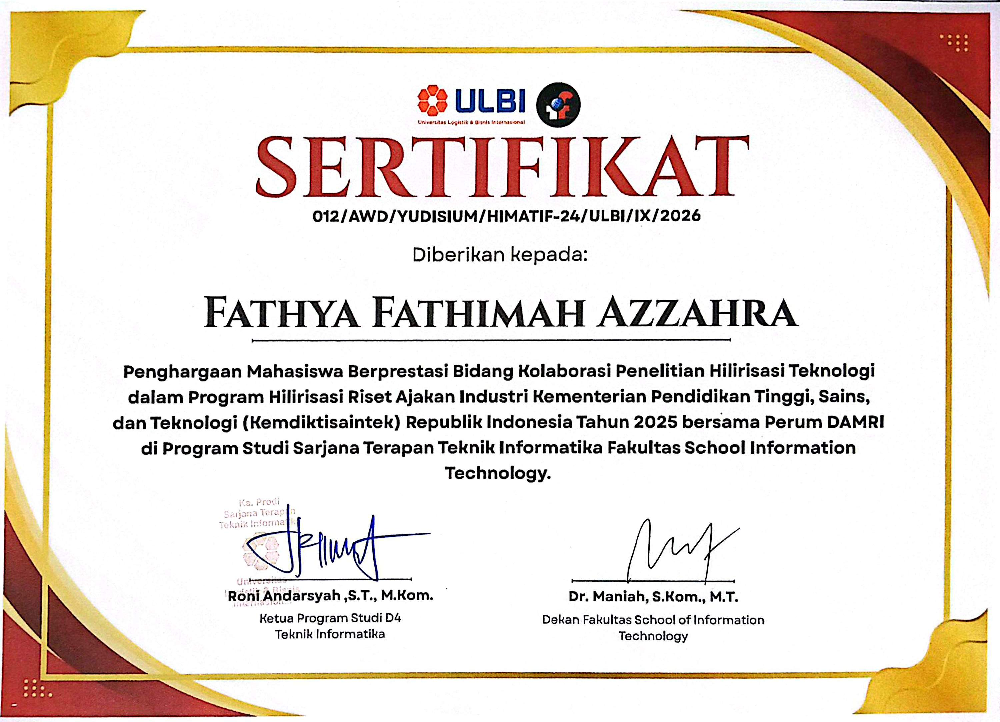
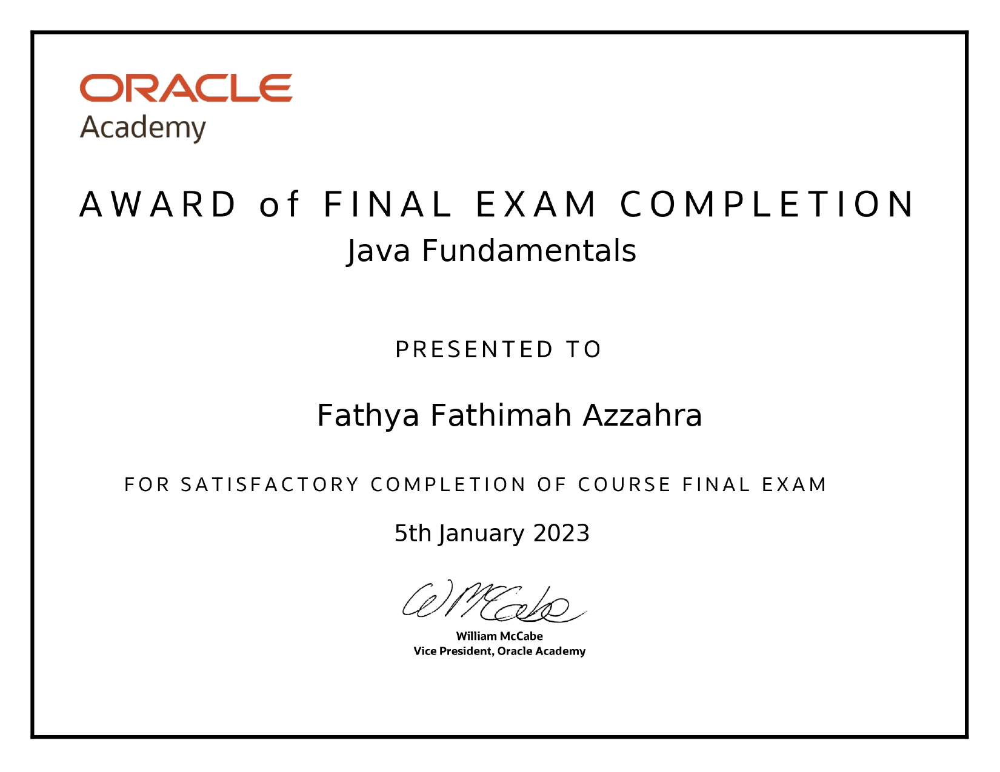

Resume Screening Decision Support System
Prototype that ranks candidates by matching score across 32 job roles, built on research comparing TF-IDF and S-BERT with Random Forest.
- Python
- TF-IDF
- Sentence-BERT
- Random Forest
Open to work · System Analyst / Backend Developer
I'm Fathya Fathimah Azzahra, an Informatics Engineering graduate who turns business processes into clear system designs and working software, from BPMN and ERD to Go and Laravel.
Cimahi, West Java
D4 Informatics Engineering graduate (ULBI, GPA 3.80) who enjoys the space between business needs and working systems. Through internships at Perum DAMRI and Museum Geologi I mapped processes with BPMN, designed DFD, ERD and UI/UX prototypes, and wrote technical documentation. I build web applications with Laravel and Golang.
Open any card for the role, what I did and the stack behind it.
Prototype that ranks candidates by matching score across 32 job roles, built on research comparing TF-IDF and S-BERT with Random Forest.
Boarding-house rental platform with admin, owner and seeker roles, Google login and Midtrans payments.
Process mapping, UI/UX for 3 user roles, a Nine-Box Talent Matrix and AI-based talent recommendations. Registered as HKI.
System design from process flow to screens: DFD, ERD and high-fidelity UI mockups for monitoring damage to museum assets.
Coffee shop web app with a WhatsApp-based login, built with Go, MongoDB and vanilla JavaScript.
Freelance maintenance for Explora Nusantara: access control, real-time dashboard data and order-status rules.
Peer-reviewed work, a published book and registered IP rights.
Tap a role to see what I worked on.
D4 Teknik Informatika · GPA 3.80
Thesis Comparison of TF-IDF and S-BERT with Random Forest for a Resume Screening Decision Support System
Guided 20+ new students through campus orientation and academic onboarding.
Hosted university events as Master of Ceremony.
I'm open to System Analyst and Backend Developer opportunities. Email is the best way to reach me, and I'm happy to share my CV on request.
Get in touch
To keep my details away from spam bots, my email address is only shown here on request. Write to me about roles, projects or collaborations.
No email app opens? Copy the address and paste it into your mail service.
CV on request
My CV includes personal contact details, so I share it directly by email instead of hosting it publicly. Send a short message and I'll reply with the latest version.
The message is pre-filled, so you only need to add your name.
Thesis · ML / NLP
Final-project prototype that ranks candidates against job roles. The research compares TF-IDF and S-BERT feature representations with a Random Forest classifier.
Fullstack Developer · Live
A boarding-house (kos) rental platform where admins, owners and seekers each get their own workflow.
Perum DAMRI · Intern, Digital Services
HR analytics platform built with the DAMRI digital team. My part covered process mapping, UI/UX design, front-end components and documentation.
Museum Geologi (KESDM RI) · Intern
System design for monitoring damage to museum assets, from process flow to screens.
Fullstack Developer · Live
A coffee shop website with a WhatsApp-based login system, built and deployed end to end.
Freelance Web Developer & Maintainer
Maintenance and improvements for an international trade monitoring platform prototype, delivered across 3 work periods (~2 weeks total).
Intellectual property
Three registered HKI, from software and its documentation to a module for MSME exporters.
HR analytics platform built with Perum DAMRI.
Application user manual I compiled during the internship.
Delivered via Explora Nusantara.
Gallery
Tap an image to enlarge it. Sensitive details such as ID numbers are hidden on purpose.





Moments
A few moments from events I hosted, mentored and organized.